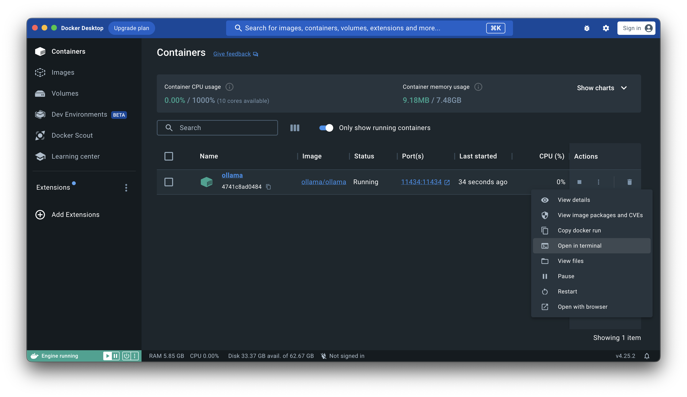
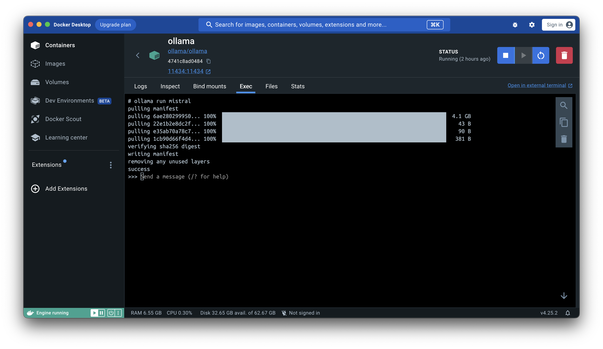

Installing the Ollama
The pourpous of this document is to guide you trough the installation of the the docker image Ollama, and to ensure that you have the right tools installed to work with the container.
Prequisite:
Before we start you need to have installed:
Docker Desktop
Python
A text editor (VS Code)
Installing Docker Desktop
You have used Docker desktop on your 3rd semester, so unless you have changed your computer since then, it should be on your machine. If not you should install it now.
For the rest of you make sure that your Docker desktop is up to date.
Instaling Python
You are going to work on your local machine (not on Github Codespaces). This means that you should have python installed on your machine.
You can download python from here: Download Python
When this is done, check if you have it installed by typing in the terminal:
python3 --version
And you should see something like this:
$ python3 --version
Python 3.10.9
installing VS Code
You will need a text editor installed on your computer. Anyone will do, but VSCode is recomended.
Running the Ollama Container
Ollama is as they describe the tool “The easiest way to get up and running with large language models locally”. An this is exatly what we are going to do, work with LLM locally. So instead of using OpenAI´s api, we are going to use a locally installed LLM and check out how this works out.
The installation is simple. Type this in your terminal:
docker run -d -v ollama:/root/.ollama -p 11434:11434 --name ollama ollama/ollama
Open your docker desktop gui and click “open in terminal”

Type in:
ollama run llama2
and you should see something like this:

Now you can type in your prompt in the console, or you can open postman or use curl and send a prompt like this:
curl http://localhost:11434/api/generate -d '{
"model": "llama2",
"prompt":"give me the zen of python"
}'